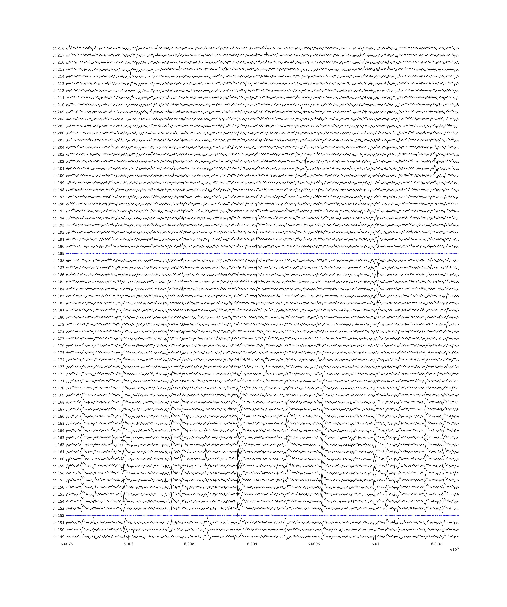
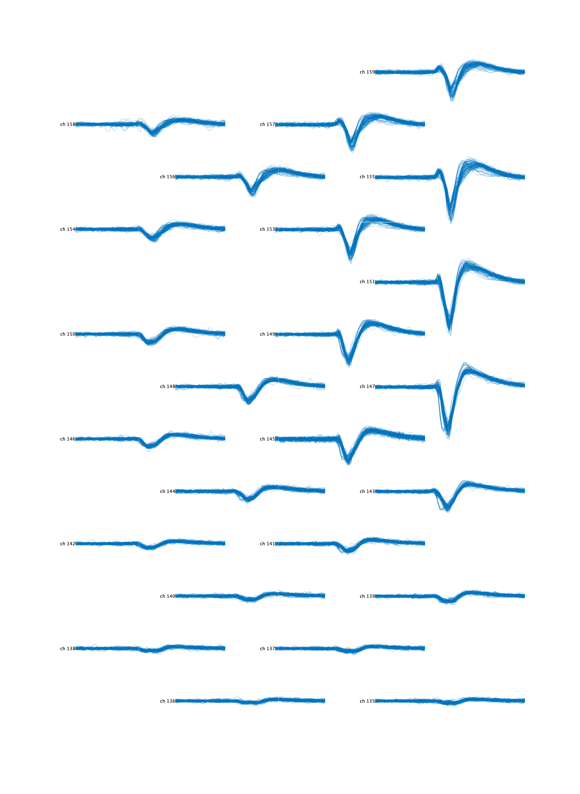

MATLAB Neuropixel Utilites¶
Neuropixel Utils is a toolkit written in Matlab for manipulating datasets collected by SpikeGLX (e.g. imec.ap.bin files) and the results produced by Kilosort / Kilosort 2. Please note that some of this functionality is redundant with the tools found in the Cortex Lab’s spikes repository, authored By Nick Steinmetz, Mush Okun, and others. Here, we prioritize an organized, easy to use, object-oriented approach to accessing, manipulating, and visualizing the data. This reduces the need to worry about metadata.
Neuropixel Utils facilitates the following data processing steps:
- Load and visualize raw neuropixel data from
imec.ap.binandimec.lf.binfiles in Matlab - Write custom pre-processing functions to apply to raw data either by writing a copy of the raw file or modifying it in place, optionally removing specific problematic time windows in the file
- Concatenate multiple Imec data files together while matching the amplifier gains
- Run Kilosort/Kilosort2, and load the results back into Matlab after manual inspection in Phy
- Plot drift maps using code adapted from the spikes repository
- Extract waveforms for each cluster from the raw data, optionally cleaning the snippets by subtracting templates for other clusters spiking during the same time window
- Visualize cluster electrical spiking images in space and cluster locations on the probe
- Determine trial boundaries in the file, and efficiently segment Kilosort results into individual trials
Neuropixel Utils was authored by Daniel J O’Shea (@djoshea) to facilitate precision artifact removal and careful inspection of raw data traces before running Kilosort, as well as post-hoc verification that the artifacts were removed successfully.
Download and install¶
To get started, clone the repo:
git clone https://github.com/djoshea/neuropixel-utils.git
And add it to your path in Matlab:
>> addpath('/path/to/neuropixel-utils')
Example walkthrough¶
% Create an ImecDataset pointing at a specific
>> channelMapFile = 'neuropixPhase3A_kilosortChanMap.mat';
>> imec = Neuropixel.ImecDataset('/data/raw_datasets/neuropixel_01.imec.ap.bin', 'channelMap', channelMapFile);
ImecDataset with properties:
pathRoot: '/data/raw_datasets'
fileStem: 'neuropixel_01'
creationTime: 7.3722e+05
nChannels: 385
fileTypeAP: 'ap'
nSamplesAP: 112412208
nSamplesLF: 0
fsAP: 30000
fsLF: NaN
highPassFilterHz: 300
apGain: 500
apRange: [-0.6000 0.6000]
lfGain: 250
lfRange: [-0.6000 0.6000]
adcBits: 10
channelMap: [1×1 Neuropixel.ChannelMap]
syncChannelIndex: 385
syncInAPFile: 1
badChannels: [3×1 double]
syncBitNames: [16×1 string]
syncRaw: []
bytesPerSample: 2
hasAP: 0
hasLF: 0
channelMapFile: '~/npl/neuropixel-utils/map_files/neuropixPhase3A_kilosortChanMap.mat'
mappedChannels: [384×1 double]
nChannelsMapped: 384
connectedChannels: [374×1 double]
nChannelsConnected: 374
goodChannels: [371×1 double]
nGoodChannels: 371
channelIdx: [384×1 double]
channelNames: [385×1 string]
channelNamesPadded: [385×1 string]
nSyncBits: 16
syncBitsNamed: [0×1 double]
creationTimeStr: '08-Jun-2018 12:09:07'
apScaleToUv: 2.3438
lfScaleToUv: 2.3438
% Mark individual channels as bad based on RMS voltage
>> rmsBadChannels = imec.markBadChannelsByRMS('rmsRange', [3 100]);
% Specify names for the individual bits in the sync channel
>> imec.setSyncBitNames([1 2 3], {'trialInfo', 'trialStart', 'stim'});
% Save the bad channels and Sync bit names to the .imec.ap.meta file so they are loaded next time
>> imec.writeModifiedAPMeta();
% Perform common average referencing on the file and save the results to a new location
>> cleanedPath = '/data/cleaned_datasets/neuropixel_01.imec.ap.bin';
>> extraMeta = struct();
>> extraMeta.commonAverageReferenced = true;
>> fnList = {@Neuropixel.DataProcessFn.commonAverageReference};
>> imec = imec.saveTransformedDataset(cleanedPath, 'transformAP', fnList, 'extraMeta', extraMeta);
% Sym link the cleaned dataset into a separate directory for Kilosort2
>> ksPath = '/data/kilosort/neuropixel_01.imec.ap.bin';
>> imec = imec.symLinkAPIntoDirectory(ksPath);
% Inspect the raw IMEC traces
>> imec.inspectAP_timeWindow([200 201]); % 200-201 seconds into the recording
Zoomed in view of data inspection figure. Black are good channels, blue are reference channels. Channels marked bad would be shown in red.

% Run Kilosort2
>> Neuropixel.runKilosort2(imec);
% Load the Kilosort2 results
>> ks = Neuropixel.KilosortDataset();
>> ks.load()
KilosortDataset with properties:
path: '/data/kilosort/neuropixel_01'
raw_dataset: [1×1 Neuropixel.ImecDataset]
channelMap: [1×1 Neuropixel.ChannelMap]
fsAP: 30000
apScaleToUv: 2.3438
meta: [1×1 struct]
pathLeaf: 'neuropixel_01'
isLoaded: 1
hasRawDataset: 1
nSpikes: 8181228
nChannelsSorted: 371
nClusters: 592
nTemplates: 653
nPCFeatures: 32
nFeaturesPerChannel: 3
nChannels: 371
syncBitNames: [16×1 string]
dat_path: 'neuropixel_01.imec.ap.bin'
n_channels_dat: 385
dtype: 'int16'
offset: 0
sample_rate: 30000
hp_filtered: 0
amplitudes: [8181228×1 double]
channel_ids: [371×1 uint32]
channel_positions: [371×2 double]
pc_features: [8181228×3×32 single]
pc_feature_ind: [653×32 uint32]
similar_templates: [653×653 single]
spike_templates: [8181228×1 uint32]
spike_times: [8181228×1 uint64]
template_features: [8181228×32 single]
template_feature_ind: [653×32 uint32]
templates: [653×82×371 single]
templates_ind: [653×371 double]
whitening_mat: [371×371 double]
whitening_mat_inv: [371×371 double]
spike_clusters: [8181228×1 uint32]
cluster_groups: [592×1 categorical]
cluster_ids: [592×1 uint32]
clusters_good: [210×1 uint32]
clusters_mua: [58×1 uint32]
clusters_noise: [322×1 uint32]
clusters_unsorted: [2×1 uint32]
% Define how the data are segmented into trials (you implement this)
>> tsi = computeTrialSegmentation(imec)
TrialSegmentationInfo with properties:
fs: 30000
trialId: [1072×1 uint32]
conditionId: [1072×1 uint32]
idxStart: [1072×1 uint64]
idxStop: [1072×1 uint64]
% Segment the KilosortDataset into trials based on start and stop idx
% trial_ids are specified according to the data structure being merged into.
% If a trial is included in trial_ids but not found in tsi,
% its contents would be blank and trial_has_data(i) would be set false.
%
% Each of seg's properties are now nTrials x ... cells containing the data
% corresponding to that trial
>> trial_ids = min(tsi.trialId):max(tsi.trialId);
>> seg = Neuropixel.KilosortTrialSegmentedDataset(ks, tsi, trial_ids)
KilosortTrialSegmentedDataset with properties:
dataset: [1×1 Neuropixel.KilosortDataset]
trial_ids: [1072×1 uint32]
trial_has_data: [1072×1 logical]
trial_start: [1072×1 uint64]
trial_stop: [1072×1 uint64]
spike_idx: {1072×592 cell}
cluster_ids: [592×1 uint32]
cluster_groups: [592×1 categorical]
sync: {1072×1 cell}
syncBitNames: [16×1 string]
raw_dataset: [1×1 Neuropixel.ImecDataset]
nTrials: 1072
nTrialsHaveData: 1072
nClusters: 592
nChannels: 385
trial_duration_ms: [1072×1 double]
fsAP: 30000
amplitudes: {1072×592 cell}
pc_features: {1072×592 cell}
spike_times: {1072×592 cell}
spike_times_ms_rel_start: {1072×592 cell}
template_features: {1072×592 cell}
spike_templates: {1072×592 cell}
% Compute useful stats about each template and cluster
>> metrics = ks.getMetrics()
KilosortMetrics with properties:
ks: [1×1 Neuropixel.KilosortDataset]
fs: 30000
channelMap: [1×1 Neuropixel.ChannelMap]
channel_ids: [371×1 uint32]
concatenatedStarts: 1
concatenatedNames: {'neuropixel_01'}
template_unw: [653×82×371 single]
template_scaled: [653×82×371 single]
template_centerOfMass: [653×2 single]
template_is_localized: [653×1 logical]
template_waveform: [653×82 single]
template_waveform_ch: [653×1 uint32]
template_amplitude: [653×1 single]
template_ttp: [653×1 single]
template_best_channels: [653×371 uint32]
spike_times: [8181228×1 uint64]
spike_amplitude: [8181228×1 single]
spike_centerOfMass: [8181228×2 single]
spike_templates: [8181228×1 uint32]
spike_clusters: [8181228×1 uint32]
cluster_ids: [592×1 uint32]
cluster_template_mostUsed: [592×1 uint32]
cluster_template_list: {592×1 cell}
cluster_template_useCount: [592×653 uint64]
cluster_num_templates: [592×1 uint32]
cluster_best_channels: [592×371 uint32]
cluster_centerOfMass: [592×2 single]
cluster_is_localized: [592×1 logical]
cluster_waveform: [592×82×11 single]
cluster_waveform_ch: [592×592 uint32]
cluster_amplitude: [592×1 single]
cluster_ttp: [592×1 single]
spike_depth: [8181228×1 single]
spike_is_localized: [8181228×1 logical]
cluster_depth: [592×1 single]
% Plot a drift map, annotated with trial start markers
>> metrics.plotDriftmap('tsi', tsi);

Note that the cluster structure looks distinct during a few time windows near the beginning and end of the recording, corresponding to regions when no trials were being performed (blue ticks near the bottom).
% Extract raw waveforms for a specific cluster id at the 24 largest amplitude channels
% Clean these waveforms by subtracting the contribution of other clusters spiking within the same time window
>> ss = ks.getWaveformsFromRawData('cluster_id', 255, 'num_waveforms', 100, 'best_n_channels', 24, 'subtractOtherClusters', true)
SnippetSet with properties:
data: [24×82×100 int16]
cluster_idx: [100×1 uint32]
channel_idx_by_cluster: [24×1 uint32]
unique_cluster_idx: 255
sample_idx: [100×1 uint64]
trial_idx: [0×1 uint32]
window: [-40 41]
valid: [100×1 logical]
channelMap: [1×1 Neuropixel.ChannelMap]
scaleToUv: 2.3438
fs: 30000
nChannels: 24
nTimepoints: 82
nSnippets: 100
nClusters: 1
data_valid: [24×82×100 int16]
time_ms: [1×82 double]
% Plot these waveforms at their physical coordinates on the neuropixel
>> ss.plotAtProbeLocations()
